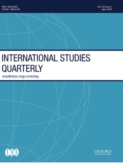
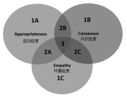
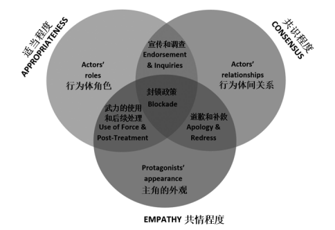

收录于合集

简 介
** 【作者】** Daniel F. Wajner ，以色列耶路撒冷希伯来大学国际关系系博士候选人
** **【 编译 】****朱文菡
** **【 校对 】****刘孝玉 周心培
** **【 审核 】****丁伟航
** **【 来源 】****Wajner, D. F. (2019). “Battling” for Legitimacy: Analyzing Performative Contests in the Gaza Flotilla Paradigmatic Case. International Studies Quarterly.
** 【期刊】** 《国际研究季刊》（International Studies Quarterly，ISQ）是国际研究协会的旗舰期刊，旨在发表与国际研究中重要理论性、实证性、规范性主题相关的领先学术成就。2018年该期刊影响因子为3.091。

为合法性而 “战”：以加沙船队为例的行事竞争
“Battling” for Legitimacy: Analyzing Performative Contests in the Gaza Flotilla Paradigmatic Case
内容提要
以加沙船队事件为例，本文提出了一组机制以系统分析国际合法性斗争如何产生、发展和结束。 作者从规范机制、政治机制和情感机制三个维度（ normative, political, and emotional mechanisms ）引入了适当程度、共识程度、共情程度（ appropriateness, consensus, empathy ）三个合法化指标（ legitimation functions ）以构建一个能够描绘各种合法性斗争的模型。 这个模型随后被应用到加沙船队的案例中，分析其框架竞争（framing contests）和由此产生的合法化或去合法化动态（delegitimation dynamics）。
文章导读
巴以冲突由来已久。巴勒斯坦内部分化出主张世俗化、容忍以色列存在并接受和谈的法塔赫（巴勒斯坦民族解放运动）和主张伊斯兰教法统治、抵制以色列存在并拒绝和谈的哈马斯（巴勒斯坦伊斯兰抵抗运动）。2005年以色列出于各种考量撤离其占领近半个世纪的巴勒斯坦领土加沙地带后，法塔赫和哈马斯就加沙归属发生冲突，最终哈马斯取得胜利，控制了加沙地带，而法塔赫控制的西岸地区仍不断被以方密如蛛网的犹太定居点蚕食。自2007年起，以方会同埃及政府合力封锁了加沙地带，造成逾两百万加沙居民陷入基本物资短缺的生存困境。本文案例就建立在此背景下，非政府力量试图通过行事竞争（performative contests，或称表现竞争）借助舆论武器对以方的封锁政策施加国际压力。
**1
**
理论背景
传统的国际政治研究方法遵循“象棋逻辑（chess logic）”——两个行为体（actors）彼此竞争产生输赢；而当代则多由“行事逻辑（performative logic，或称表现逻辑）”指导——行为体在舞台上与对手互动，但他们真正的目标不是赢得对手，而是赢得受众（audiences），因为行事的成功取决于受众的认可，核心“战场”不在舞台上，而在舞台与受众之间。
当代国际关系研究对行事合法化（the performativity of legitimation，或称表现合法化）提出了两种解释。其一是民主化进程和全球化进程使政府决策越来越易受国际舆论影响。纵观全球，由于舆论可以使区域或国际舞台上行为体的行动丧失合法性，民众话语权得到加强。更甚者，民众不再只是对政策结果做出回应，而是能够通过积极的政治参与号召国内外行为体进行干预，即获得了塑造主流国际舆论的巨大权力。其二是当代全球政治中合法化动态的无政府性质迫使行为体采取行事逻辑。这些动态在很大程度上取决于特定的身份关系：谁在每个特定情况下被集体确定为合法性的潜在提供者？谁是“确认（recognizes）”某个行动或行为行为体是否合法的“主要受众”？
所有国家都致力于在这场正在进行的“心灵战争”中提高软实力。无论在外交政策方面还是军事实践方面，公共外交、战略传播和大众文化都已成为决策的重要工具。 在其最纯粹的意义上，行事竞争（ performative contest ）是指旨在通过发展区域或全球媒体溢出（ media spillover ）来获得合法性的各种政治对抗 ——竞争的行为体为使某方或某事在受众眼中获得或丧失合法性而制造的有预谋的冲突（通常是多边的）。 每台电脑、相机或手机都可能成为一种有效的 **“ 武器”，许多机构（**agents ）可以在没有经过大量培训的情况下部署它们。 ****行事逻辑争端比象棋逻辑争端有效得多，成本也低得多。
我们如何审视这些合法化竞争及其政治影响呢？根据社会建构主义，一旦国际受众被某机制的合法性所吸引，且该机制的合法性来源于该机构本身，就可以认为这种机制的合法性被成功授权。但是，对这种“授权过程 ”的分析是一项复杂的任务。这主要是由于合法化实践的行为体间性质导致概念运作的困难。此外，获得受众的支持和使机构合法化并不一定保证行为体能够成功地推动其政策立场，因为结果可能需要一段时间才能出现，其间 其他权力因素可能发挥作用。为此，本文提出了一个折衷于合法化的 规范、政治和情感维度 的理论框架，分别由三个相辅相成的合法化指标即 适当程度、共识程度和共情程度 来表示（见图 1）。第一个指标是通过确保适当程度来实现合法化，因为人类在做决策时会首先考虑在特定情况下怎么做是合适的。适当程度的合法化机制源于所谓的“适当性逻辑（logic of appropriateness）”。第二个指标是通过确保功利性共识来实现合法化，即在集体偏好视域下通过影响其他行为体战略计算（strategic calculations）来获得其支持的能力。共识程度的合法化过程更符合所谓的“后果逻辑（logic of consequences）”。第三个指标是通过确保共情程度来实现合法化，即在观察者感知到他人情绪时会影响其情绪反应。因此，共情程度就是理解他人境况的一种体验。这也是三个指标中最少人问津的。

图1.分析合法化动态的模型
**2
**
案例背景
2010年5月，为了突破自从2007年哈马斯接管加沙地带以来以色列对加沙地带的封锁，土耳其人权基金会（IHH）和“自由加沙运动”（Gaza Freedom March）组织了载有约700名社会活动分子的救援船队向加沙地带进发。5月30日至31日，以色列海军突袭了其中的一艘土耳其籍救援船“马维•马尔马拉”号（Mavi Marmara），造成9名土耳其籍船员死亡，55名乘客和10名以色列海军突击队员受伤。危机很快成为国际新闻。由此，以色列和土耳其关系在接下来的六年中不断恶化。危机还加剧了以色列、哈马斯和巴勒斯坦民族权力机构之间的紧张关系。事件发生后，联合国先后派遣了两支调查团队。一支来自于联合国人权理事会，另一支则是由新西兰前总理帕尔默（Geoffrey Palmer）和哥伦比亚前总统乌里韦（Alvaro Uribe）主持的调查小组。在伴随着以土双方谈判过程的几次外交互怼（rhetorical escalations）以及以色列总理内塔尼亚胡于2013年3月22日正式道歉后，以色列与土耳其最终于2016年6月27日签署了和解协议。
加沙船队事件既不是第一次反对加沙封锁的运动，也不是巴以冲突间首次民间主导的运动（grassroots-led campaign）。但较之以往，此次事件在行动安排、全球参与和国际支持层面上更为广泛，下面就分别从船队组织者、以色列当局和外部各方角度来看此次事件。
从加沙救援船队组织者角度来看，此次运动的力量在于行事逻辑，即能够吸引观众。参与者在登船前就计划唤起世界公众和国际组织对封锁政策的关注。他们很清楚要想在国际受众中成功的唤醒他们的意识，需要一场戏剧性的表演，无论结果是喜剧——顺利抵达加沙并受到广泛欢迎，抑或悲剧——一场海上的冲突。哈马斯领袖哈尼亚（Ismail Haniyeh）表示，哈马斯领导层也以同样的方式理解其潜在影响—— **“ 如果这些船只到达加沙，那将是加沙的胜利。如果它们被犹太复国主义者（**Zionists ）拦截和恐吓，那么它也将成为加沙的胜利 ”。正如“自由加沙运动”女发言人格雷塔·柏林（Greta Berlin）所表示的那样，“我们将会进行非暴力抵制。这将成为以色列的公关噩梦。”
潜在的合法化效应可能首先来自情感机制。救援船队在加沙的接应方指出，以色列海军突袭救援船队的“海盗”形象和“令人震惊的公然冒犯”会引起国际反应。土耳其人权基金会主席在“马维•马尔马拉”号离开伊斯坦布尔时即发表声明，将规范维度带入政治机制考量：“我想提醒以色列在危机公关方面明智一点。如果你妄图阻止此次运动，你将自绝于世，这样做除了自戕以外别无益处。因为这些都是人道主义救援船。”加沙救援船队组织者已经意识到这种规范、政治和情感的三维合法性战略要求先发制人。船队的另一个领导人指出：“我们的计划是事半功倍的，在媒体宣传方面略施小计，就将使以色列强大的海军力量化为无形，而这只是我们收获的冰山一角。”
从以色列当局角度来看，他们也认同这次行动的行事本质（performative nature ）。以色列外交发言人回应： **“ 我们无法在公关上取胜，如果我们允许他们向我们扔鸡蛋，我们看起来很蠢，但如果我们试图用武力阻止他们，我们就像野兽。” **以色列国防军总司令Gabi Ashkenazi在内阁会议上强调救援船队“赢得媒体（media success）”的政治后果——媒体上发布的冲突现场图片满足了救援船队旨在使以色列难堪，引发全球讨论，从而向以色列对于加沙地带的封锁政策施加压力这一计划。以色列随后采取的战术同样符合行事逻辑。他们在半夜登船，并通过卫星进行通信，这些都旨在使行动的媒体资料尽可能少。同时以色列当局还很重视其公关策略，他们邀请当地和外国记者参加以色列国防军直升机和舰队上的士兵行动，并提前安排媒体中心战略简报和相关报告，所有这些步骤都出于对合法性问题的理解和将会发生的叙述，Ashkenazi详细说明道，“我们理解银幕形象的重要性，我们理解这场对人们意识、思想和心灵的战争，我们真的理解这一点”。
从外部评价角度来看，他们将这种非传统战争视为是先验的（priori）。这一行动的行事本质得到了国际媒体公认，他们将“戏剧”“表演”等语词与“战斗”“战争”“竞赛”相呼应，《纽约时报》《华尔街日报》甚至专门进行了此次“公关战争”的专题报道，提供了双方对战前公关准备的细节。被截获的地缘政治情报公司Stratfor的内部邮件对船队事件的行事本质提出洞见。在主要事件发生前一周，一位分析师就预测“电视对抗”即将出现——“这就是一场秀”。Stratfor分析师一致认为，船队组织者试图“引起国际社会对封锁的关注”，土耳其会“看起来很好并且越来越受欢迎”，而以色列会“看起来很糟糕。”分析师们指出了以色列潜在的合法化成本，预测以色列将“越来越被孤立”，这将转化为“对加沙的让步”。
**3
**
具体分析
从船队事件一开始，在各方对事件进行各种解读时，国际受众便成为了这场舆论战的证人、次要行为体和法官。 本节将使用框架分析方法中的话语分类法（discursive categorization in the framing analysis approach），回溯这些合法化战场中的行事竞争。这种不拘一格的现象学框架并不试图证明政策制定的直接因果关系，而是为了用分析性的语言来讲好船队事件这个故事。
根据联合国的调查报告和各方的官方声明，作者从行为体的主要争议点中选出9个主框架，使用合法化指标对其进行分析（见图2）。

图2.加沙船队案例中的合法化战场
3.1 适当程度
3.1.1 受害者和加害者（人道主义援助，还是恐怖主义支持者？）
适当程度指标的第一个框架是受众对受害者和加害者的识别。在以色列国内的报道中，当局声称土耳其人权基金会和全球恐怖主义有关，这样的说法难以进入国际舆论舞台。
3.1.2武力的使用（对不成比例的侵略的抵抗，还是对有预谋的暴力的自卫行动？）
救援船队和以色列双方均指责对方首先出手。船队成员辩称，他们是在以色列国防军的炮火前自卫。联合国调查报告称“无法判断以色列海军在登船前后是否有开火”。
3.1.3封锁政策的正当性（不合法的不可接受的适得其反的政策，还是合法的可容忍的基于安全考量的政策？）
第三个框架是对封锁政策在法律、道德或实用性（functional）层面的规范性考察。船队被以色列海军拦截，虽然引起了更明确的行动呼吁，但封锁政策仍以同样的方式被叙述着。联合国和欧盟机构敦促以色列结束“适得其反”和“不可接受的”封锁。欧盟外交政策高级代表凯瑟琳阿什顿要求“立即、持续和无条件地开放过境点”。大多数欧盟国家都提及“无法容忍”“不可持续”“站不住脚”等词，同时要求将封锁“移除”“解除”“结束”，或“可持续”“持久”的“解决方案”。此外，俄罗斯、中国、阿拉伯国家联盟和伊斯兰合作组织发表声明，呼吁终止封锁政策。各家国际非政府组织同样认为封锁不符合国际法、不可接受或不可持续。
联合国的两份调查报告反映了受众观点的巨大差异。联合国人权事务委员会2010年的调查认为封锁是非法的，因为这项政策“造成了不成比例的平民伤害（编者注：出于安全考量的封锁政策割裂了加沙地带与外界的物理联系，救援物资无法抵达，当地居民的生存将难以为继，因此此处平民非指船队成员，而是指加沙地带居民）” 。相比之下，帕尔默- 乌里韦调查小组2011年的报告证实了海军封锁的合法化，认为它是“一个防止武器通过海上进入加沙的合法的安全措施，其实施符合国际法的要求。”该报告的结论也受用于以色列针对未来类似船队事件的回应框架，即这些组织应使用“既定程序和指定土地与以色列政府和巴勒斯坦权力机构协商过境”。然而，帕尔默- 乌里韦报告还是呼吁以色列考虑政策改变，并指出以色列“应该定期审查海军封锁，以评估是否仍然需要继续封锁政策”。
3.2共情程度
3.2.1行为体行为造成的危害（为暴政流血，还是为暴民流血？）
5月31日的事件对基于共情程度的主框架产生了重大影响，这主要是由于发生了船队成员死亡。这些图像在受众中引起强烈的情绪，包括震惊、愤怒和恐惧。最初的媒体报道接受了哈马斯和土耳其发布的“大屠杀”“野蛮袭击”“野蛮侵略”“国家恐怖主义”的指控。高度情绪化的术语同样在全球媒体中变得突出——“致命行动”“疯狂攻击”“冷血屠杀”。
以色列方面最后决定传播船队成员暴力伏击的视频，但这对于推进己方的 “暴民”叙述主框架并平衡受众的共情感受来说“太少了，而且太晚了”。 以色列国防军难以下定决心放出这些视觉材料在于这样一个两难困境 —— 这种视觉材料可以提升外国观众对以色列国防军的共情程度，然而，它可能会减损在以色列国民心中令人放心的“强大的以色列国防军”的形象。 ****
3.2.2 舞台设计和服装（海盗，还是圣战？）
利用共情程度分析的第二个合法化机制是通过“海盗”或“圣战”的棱镜来看待这一事件。土耳其、哈马斯和巴勒斯坦民族权力机构甚至在事件发生之前就推进了“海盗”叙述主框架，警告即将发生的“海盗行为”“犹太复国主义海盗行为” 或“以色列海盗行为”。在以色列海军“登船”后，船队的支持者网络立即强化了这种框架——这是在“公海”上由“蒙面”士兵用“绳索”进行的。
在事件发生之前，以色列还试图用一个“圣战”叙述主框架对抗“海盗”框架，该框架将引起对船队组织者即圣战分子的负面情绪。然而， 以色列情报界未能提供有价值的视觉材料 ——即可以将船队组织者的形象描绘成在情感上使人感到恐惧、反常或嗤之以鼻的圣战分子。
3.2.3公关危机的后续处理和对手（非人道的，还是人道的？）
第三个情感机制上的行事竞争在于以色列在事件中采取的行动的“人道”程度。首先，相当一部分国际受众对以色列政策的反感是基于他们对该国不愿意协助加沙地带居民的“不人道”或“残忍”的看法。船队组织者和一些国际非政府组织经常将加沙描述为“露天监狱”或以色列旨在“扼杀加沙”的“集体惩罚”。英国时任首相卡梅伦也称加沙为“监狱营”。即使在支持封锁政策的适当性的行为体中，人道主义问题也很能引起共鸣。因此，世界对以色列在2010年6月宣布逐步缓解封锁和改善加沙经济的让步做出了积极回应。
对以色列行为“非人道的”看法也基于船队事件发生后对船队成员的虐待指控。一些被以色列监禁的活动参与者是外国公民这一事实使他们的政府和媒体被船队成员“充分动员”。
最后，“人道”共鸣也与以色列方面没有作出道歉有关。在国内限制下，内塔尼亚胡最初对“生命损失”感到“遗憾”的声明被认为是含糊不清的。政府的拒绝强化了受众以色列缺乏人性和责任感的看法。
3.3共识程度
3.3.1行为体行动的公共支持（不赞成，还是支持？）
全球对于加沙船队的支持最初建立在域外国家的政治支持上。当这一事件引起国际公愤时，不赞成以色列军事行动的共识也在全球得到强化，尽管共识有程度的差别。联合国安理会的决议表达了“深深的遗憾”，并“谴责”这些行为。以色列大使被传唤的情况出现在比利时、丹麦、希腊、挪威、西班牙和瑞典；厄瓜多尔、南非和土耳其召回了他们在以色列的代表，而尼加拉瓜则暂停了与以色列的外交关系。然而，船队事件对以色列封锁政策的政治压力可能比外交上的压力更大。关于需要改变对加沙的政策，出现了高度的国际共识。
然而，由于美国的袒护，联合国安理会在决议中并未要求以色列对封锁政策进行调整。与国际公愤截然相对的是，白宫采取了“温和的回应”，副总统拜登则赞同以色列提出的通过阿什杜德港卸下船队货物的“合法”建议。美国所发挥的支持作用使国际社会对新的船队运动提出批评，其中包括潘基文“寻求劝阻”类似船队的呼吁。
3.3.2关于联盟的感知模式（以色列的“孤立”，还是土耳其的“重新调整”？）
在中东、欧洲和北美几大城市，支持船队的示威运动迅速爆发，并辅以网络社交媒体上的公共外交。然而，美国各地的亲以色列网络和脸书活动也表现出对以色列的公共支持。事实证明在初步报道中以色列在全球舆论中被孤立的情况是被媒体夸大了。
3.3.3对调查的态度（要完全独立调查的“可信度”，还是要有限调查的“透明度”？）
鉴于2009年加沙战争后的《戈德斯通报告》（编者注: 《戈德斯通报告》是联合国人权理事会对2008年底至2009年初加沙地带冲突的调查报告。报告对以色列军队十分不利，指责其在冲突中犯有战争罪。由于美国的斡旋，这一报告并未提交联合国安理会审议。），以色列当局表示不愿意参加国际调查。
土耳其和船队组织者指出这一不合作态度说明以方不具有“可信度”，而以色列则试图通过有限的、在地的具有“透明度”的叙述主框架转为这一合法化行事竞争的攻方。以色列先发制人，首先任命了国际调查团队，并获得奥巴马政府的支持和背书。然而，国际社会仍有部分认为这份报告是不充分的且有倾向的。几经周折，最终联合国的第二份调查报告即帕尔默- 乌里韦调查小组2011年的报告获得了国际的广泛支持，而这份报告在许多问题上与以色列方面的报告是一致的。
**4
**
结论
作者首先通过证据表明行为体承认他们参与了合法化斗争，以及他们在此基础上采取的策略——船队组织者、以色列和外部各方对即将到来的舆论战的行事本质达成一致。随后作者分析了行为体的去合法化战略是如何在合法化战场上竞争以唤起国际受众对己方框架的共鸣。分析表明，受众的最初反应符合船队组织者的规范和情感机制，随后这被转换为政治机制。船队成员被赋予来人道主义角色，而以色列国防军被认为是残忍的反派，封锁政策也因不人道、不符合国际法、不道德或低效而招致批评。并且，由于拒绝道歉和国际调查，以色列受到多国政府、区域或国际组织的广泛批评，从而引发日益加剧的关于其被国际孤立的辩论。
以色列当局普遍认为他们输掉了这场行事竞争，因此付出了失败的代价。以色列政府逐步进入补救阶段：首先是表示遗憾，随后将国际部分纳入调查队伍，愿意谈判赔偿，并逐步放开封锁政策。与此同时，以色列开始尝试多种去合法化策略来缩小差距。军事和外交部门使用了有关土耳其人权基金会和哈马斯有联系、船队成员有预谋的抵抗和封锁政策实施具有程序合法性的新材料，从而通过规范机制进行反击。并且通过引起共情的去合法化机制，发布了将船队成员视为圣战分子的视觉材料。此外，在美国支持下，以色列启动了共识机制，试图达成阻止更多的救援船队前往加沙的国际声明，并广泛赞同包容以色列叙述框架的帕尔默- 乌里韦报告。
这场行事竞争在2016年进入尾声，双方最终达成和解条款，以色列通过道歉和支付赔偿来承担责任，而土耳其则停止要求全面终止封锁政策并在国际法庭撤销对以色列的指控。然而，本研究的目的不是证明合法化动态与谈判结果之间的因果关系，也没有足够的因素来证明国际合法化因素的重要性超过了其他因素。
从理论角度来说，本研究通过提供另一种可以处理影响力日益增强的行事竞争的分析框架，有助于扩展关于合法化动态的国际政治研究。尤其，调查结果强调了在行事竞争过程中的规范、政治和情感机制三者之间的相互作用。探究他们之间的接合点并捕捉其在舆论战上的可塑性，有望改进对当前国际冲突的叙述。
在未来的研究中，这一跨学科研究议程需要进一步的实证检验，还需要实施包括定量和定性在内的多种方法论工具，以进一步收集、解释和分类关于影响去合法化策略如何在不同受众之间产生共鸣的微观过程的证据。最后，为提升研究的科学性，应更广泛地区分行事竞争的类型。由于寻求合法化对全球政策制定的影响越来越大，因此进一步探索这些行事竞争的原因、机制和后果对于当代国际政治研究来说是必不可少的。
_ ** _ 本文由国政学人平台编译推荐**
往期阅读
【重磅速递】约瑟夫·奈：美国霸权的兴衰：从威尔逊到特朗普 | 国政学人
【重磅推荐】巴里·布赞：英国学派视角下的中国崛起 | 国政学人
【重磅速递】米尔斯海默：注定失败：自由主义国际秩序的兴衰 | 国政学人
【IPE重磅】罗伯特·基欧汉：国际政治经济学的新与旧 ｜国政学人
【百年国关】历史在国际社会中的应用：从巴黎和会到现在 | 国政学人
【国际组织】IO杂志：联合国维和行动的武力运用问题研究 | 国政学人
【国际秩序】为什么自由主义国际秩序理念将美国外交政策引入歧途？| 国政学人
【关系理论】“关系”：世界政治关系理论的中国话语 | 国政学人
【英国学派】张勇进：中国与全球国际社会中的自由主义等级制：实力与对规范变迁的协商 | 国政学人
【地区秩序】论经济实力的可转化性：中国经济崛起与东亚安全秩序 | 国政学人
【中俄关系】不得已的伙伴：系统-单元动态与中俄关系 | 国政学人
【IPE研究】美国对外贸易政策的“1934年体制”是如何形成的？| 国政学人
【现实主义】斯蒂芬·沃尔特：傲慢的终结与美国克制的新时代 | 国政学人
【理论批判】系统、层次与结构理论：沃尔兹的理论并非系统理论 | 国政学人
【外交政策】单极体系下的不和平状态与美国外交政策 | 国政学人
【欧洲研究】资本主义多样性与合规：加入欧盟后中东欧的经济改革 | 国政学人
【理论研究】吴建树：权力、道德、均势、联盟与摩根索——汉斯·摩根索的经典现实主义思想再解读
【友谊国关】将友谊重新引入国际关系：从中国到西方的关系本体论
【定量研究】政党实力和经济增长（Party Strength and Economic Growth）| 国政学人
【台湾学者】向骏：美国从“霸权稳定”到“霸凌不稳定” | 国政学人
【理论研究】巴里·布赞等：重思日本：主流国际关系理论的偏见 | 国政学人
【南亚研究】南亚对冲：中印竞争中经济和安全利益的平衡 | 国政学人
【外交政策】美国霸权的自我毁灭：华盛顿浪费了单极时代 | 国政学人
【定量研究】谁在欧洲议会中领导委员会？ ——基于2014年欧洲议会选举的研究 | 国政学人
【定量研究】暴露于难民危机之中会让当地人更有敌意吗？| 国政学人
【恐怖主义】恐怖主义组织扩展数据（EDTG）的介绍——从1970年到2016年 | 国政学人
【定量研究】赞助、信任和国家能力：庇护主义的历史轨迹 | 国政学人
【伊朗研究】比较伊朗伊斯兰革命前后威权政体的本质和领导能力 | 国政学人
【东亚研究】东亚的重叠式区域主义：决定因素和潜在影响 | 国政学人
【战争研究】不确定的战争：克劳塞维茨在全球时代仍适用吗？｜国政学人
【历史类比】克服西方历史想象的贫困：理解中国南海冲突的其他历史类比案例 | 国政学人
【区域重磅】阿米塔·阿查亚：重塑东南亚研究：自我怀疑、渴望和对比较的承诺 | 国政学人
【安全研究】打击军事力量的新时代：科技变化与核威慑的未来 ｜国政学人
【理论研究】砝码国家何以自抬身价？——两极格局下同盟政治中的“科林斯难题”研究
【中东研究】国际误识：以色列公共外交中的幽默政治和国家认同 | 国政学人
【IPE研究】公平贸易运动对内嵌自由主义的挑战 | 国政学人
【社群冲突】非洲农村社群冲突分析：剩男与一夫多妻的邻族 | 国政学人